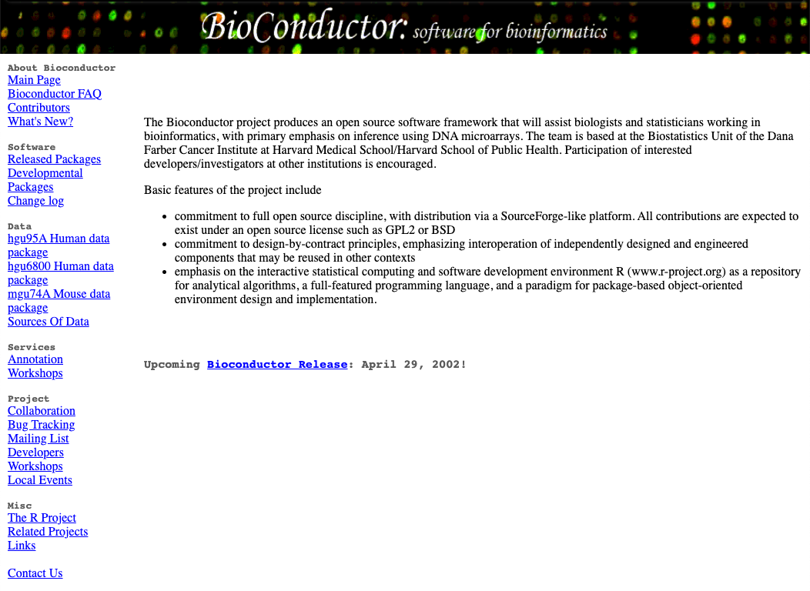
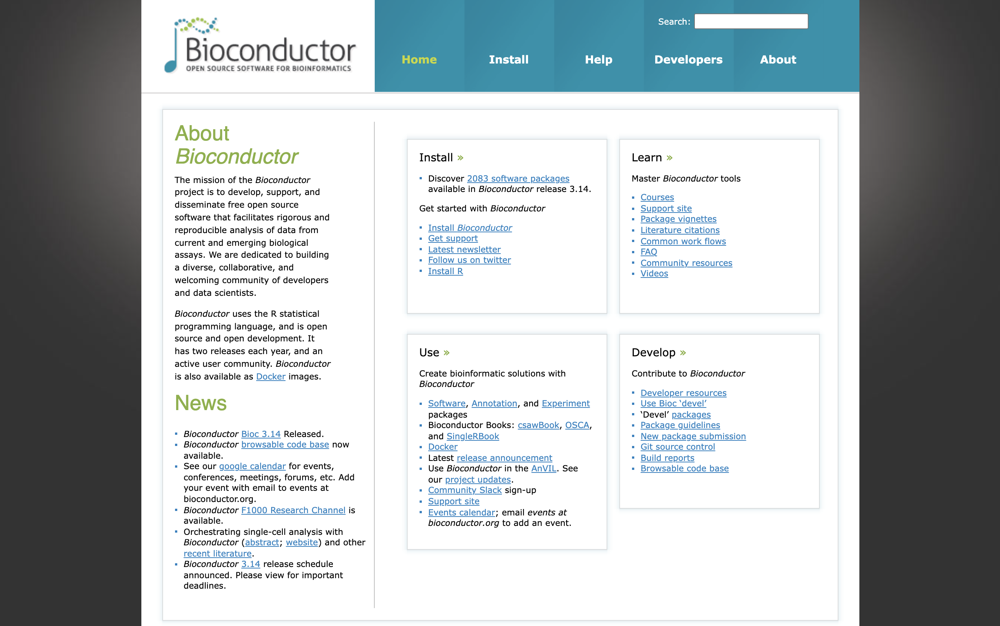
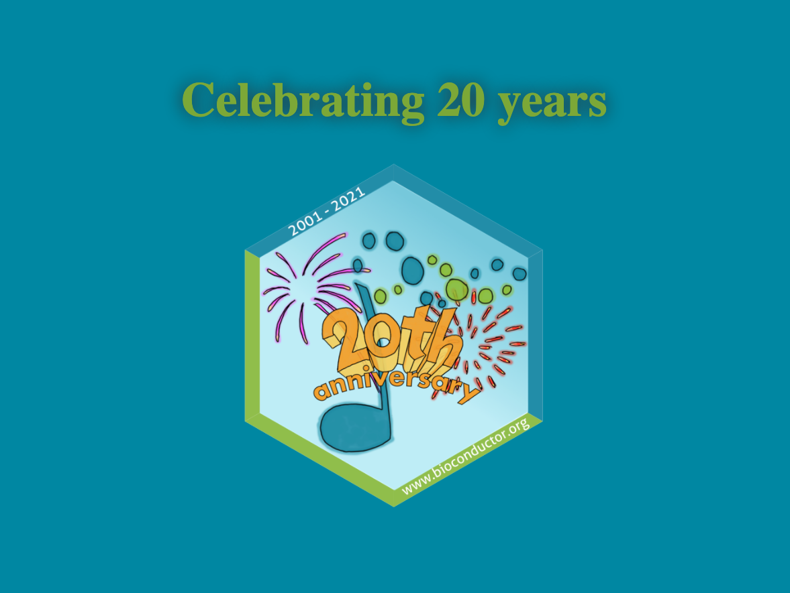

What a perspective! Twenty years of continuous contributions to fields ranging from biomedical data sciences to immunology, microbiology and most recently single-cell genomics.
Writing this as an early career postdoctoral researcher who started using Bioconductor packages as a graduate student about 10 years ago (just about half the lifetime of the Bioconductor project at this point), I feel privileged to reflect on the most recent half of the Bioconductor project lifetime that I have had the chance to witness first-hand, both as a user and a contributor.
I will skip over the first 10 years years, and redirect the nostalgic ones to the Wayback Machine snapshot of the Bioconductor website in March 2002 and the first published article describing the aims and methods of the project at its inception Gentleman et al. (2004)

OK, well, taking a brief look at the Wayback machine snapshot, let’s just take a second to acknowledge that at its inception (Bioconductor Release 1.0: May 2, 2002), the Bioconductor project included just 15 packages, broadly classified as:
- annotation
- data management and organization
- differential expression
- analysis of microarray data
- visualisation and normalisation of microarray data
- storage and retrieval of large datasets
To put that into perspective, the Bioconductor project is now (Bioconductor 3.14; October 27, 2021) strong of:
- 2083 software packages
- 408 experiment data packages
- 904 annotation packages
- 29 workflows
- 8 books
That is about 1 new package every other day for the past twenty years. Way to go!

That collection of core-maintained and community-contributed packages has grown so large that there is now an entire hierarchy of terms to categorise those packages, called BiocViews. Check them out!
But the Bioconductor project has grown to become so much more than a collection of software packages for bioinformatics. The success of the Bioconductor project has also grown a welcoming and inclusive community made of a Core Team, package developers, and users of all backgrounds and experience levels. I am reminded daily of this friendly, active, and stimulating environment through the Slack workspace, the Support site, and the YouTube channel. On top of that, regular events that bring the community together are the highlight of my calendar: the annual BioC conference in North America, the regional meetings in Europe (EuroBioC), Asia (BioC Asia), and summer schools (e.g., CSAMA).
And speaking of conference, let me close on the celebrations of the 20th anniversary of the Bioconductor project, as a collection of photos contributed by community members presented during the BioC 2021 conference Meet the Community Advisory Board (CAB) session. I’m sure this will bring up memories for some of the earliest contributors to the Bioconductor project, and I hope that it will show even the most recent users how open and welcoming the Bioconductor community is!

References
Gentleman, R. C. et al. (2004). “Bioconductor: open software development for computational biology and bioinformatics”. In: Genome Biol 5.10, p. R80. ISSN: 1474-760X (Electronic) 1474-7596 (Linking). DOI: 10.1186/gb-2004-5-10-r80. URL: https://www.ncbi.nlm.nih.gov/pubmed/15461798.